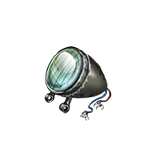
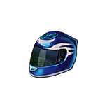
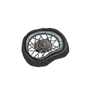
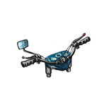
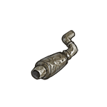

Получено: файл; исходный URL. Иллюстрация «Байкерская коллекция» из каталога ViveR_9, сопоставлена по точному названию; возможны отличия версий. Оригинальный файл без перекодирования; авторство отдельно не установлено. Страница: источник.

Байкерская коллекция
ВКонтакте; дата источника не указана- Тип
- Коллекции
- Версия и дата
- ВКонтакте; дата источника не указана
Элементы коллекции















Данные по источнику · ВКонтакте · дата источника не указана
Предварительно: один источник; требует сверки. Требуется сверка.
- Награда
- 100 опыта и волчья ягода
- Где копать
- Сундуки, грядки, особняк, нефтяная вышка, бассейн, мост, машина, заборы и буквы
- Состав (источник Zombie-island)
- Передняя фара; Шлем; Колесо; Руль; Глушак.
- Награда (источник Zombie-island)
- 1 Волчья ягода; 100 Опыт.
- Где копать Байкерскую коллекцию в Зомби Ферме лопатами
- Часовая башня; Золотой миллиард; Жемчужина востока; Кладоискател; Кладоискател с мозгами; Рыбак; Рыбак с мозгами; Китайская стена; Глаз-алмаз; Бассейн; Останкино; Останкино за монеты; Нефтяная вышка; Белый дом; Японский сад; Джокер; Бизнес-Центр; Готический склеп; Мост; Флаг Украины; Флаг России; Флаг Зомби Фермы; Снежная дорога; Песок; Камни; Мостовая; Галька; Машина; Скамейка раз; Скамейка два; Ограда раз; Ограда два; Фонарь два; Йети-зомби; Хижина; Снежное дерево; Дружба; Забор раз; Забор два; Стена раз; Стена два; Столб Золотой; Столб-Символ; Беседка; Забор; Чучело Санты; Груда камней; Камень средний; Камень большой; Валун поменьше; Валун; Маленький зимний валун; Средний зимний валун; Большой зимний валун; Кварц 1; Кварц 2; Кварц 3; Дуб маленький; Дуб средний; Дуб большой; Дуб огромный; Ель маленькая; Ель средняя; Ель большая; Маленькая зимняя елка; Средняя зимняя елка; Большая зимняя елка; Настил бамбуковый; Лампа садовая; Садовая ограда; Замшелый камень; Замшелый камешек; Хвойник маленький; Хвойник средний; Хвойник большой; Кустарник малый; Кустарник большой; Сакура в цвету; Сувенирная сакура; Весенняя ваза 3; Весенняя ваза 2; Весенняя ваза 1.
- Байкерская выпадает из мешков Кладоискателей
- Кладоискател; Кладоискател с мозгами.
- Байкерскую можно найти при сборе урожая и вскапывании земли
- Грядка; Кусок земли.
- Байкерская выпадает из Секретного клада, ценностей, Сундука Чудовища
- Секретный клад; Сундук Чудовища; Пернатый подарок; Сюрприз; Простое; Коллекционер; Коллекционная посылка; Коллекционный.
- Байкерская коллекция попадается при колдовании Палочками дома
- Палочка-выручалочка; Каменное сердце.
- Страница сайта Байкерская коллекция
- Описание:.
Данные по источнику · ВКонтакте, ZombieS Forever · дата редакции не установлена
Предварительно: Историческая фанатская страница; независимость от других источников не установлена. Возможны различия версий и дат.. Требуется сверка.
- Награда по ZombieS Forever
- 100 опыта и волчья ягода
- Места получения: выборка из источника
- Сундуки, грядки, глаз-алмаз, особняк, нефтяная вышка, бассейн, цветик и др.
Данные по источнику · браузерная версия; платформа в ответе не уточнена · Дата на странице (формат не уточнён): 14/04/2015
Предварительно: Ответ справочного сайта; достоверность и независимость от других фанатских источников не установлены. Возможны различия редакций и версии.. Требуется сверка.
- Ответ источника
- Байкерская коллекция Зомби Ферма может быть собрана любым игроком, желающим получить одну Волчью ягоду и 100 баллов опыта. Все 5 предметов этой коллекции модно откопать под Часовой башней, скамейками, Джокером, Жемчужиной Востока, машиной, Нефтяной вышкой, найти в Японском саду, песке, на снежной дороге, под дубами разных размеров, кварцами, садовыми оградами и множеством других зданий. Игроки часто находят эту коллекцию в секретных кладах, сюрпризах, сундуках чудовища. А если наградить звездочетов или кладоискателей мозгами, то они могут принести в своих мешках все составляющие Байкерской коллекции.
Данные по источнику · браузерная версия; платформа не указана · дата редакции не установлена
Предварительно: Содержимое списка: изображения и колонки могут терять смысл при извлечении текста; отдельная страница и дата не проверены. Подписи alt иногда ошибочны.. Требуется сверка.
- Текст карточки из каталога
- 100 опыта и Волчья ягода Передняя фара Шлем Колесо Руль Глушак Где копать: Сундуки, Грядки, Глаз-алмаз, Особняк, Валентинка, Вождь, Нефтяная вышка, Бассейн, Машина, Столб-Символ
Данные по источнику · Мой Мир (Mail.ru); историческая таблица · дата редакции не установлена
Предварительно: Источник сам использует знаки вопроса; не следует считать такие места подтверждёнными. Возможны изменения патча и платформы; независимость от других справочников не доказана.. Требуется сверка.
- Название в источнике
- Байкерская коллекция
- Где копать
- Сундуки, Грядки, Глаз-алмаз, Особняк, Валентинка, Вождь, Нефтяная вышка, Бассейн, Машина, Столб-Символ
- Награда
- 100 опыта и Волчья ягода
Данные по источнику · браузерная версия; на сайте указана игра ВКонтакте · дата редакции не установлена
Предварительно: Исторический текст; сильно совпадает со справкой Zommbie.at.ua, независимость не доказана. Отрицания и доступность могут измениться с патчем.. Требуется сверка.
- Где искать по странице «Зомбастики»
- Машина, песок, бизнес-центр, бассейн, нефтяная вышка, цветик, кладоискатель, каменный идол.
Данные по источнику · историческая браузерная версия, платформа не указана · 10.01.2014 — дата в каталоге; дата редакции материала неизвестна
Предварительно: Фанатский список без вероятностей и уточнения площадки; независимость от других источников не установлена.. Требуется сверка.
- Где искать по списку сайта
- Машина, песок, бизнес-центр, бассейн, нефтяная вышка, цветик, кладоискатель, каменный идол
- Оговорка
- Список может относиться к разным условиям, инструментам и периодам игры; не доказывает гарантированное выпадение. Заявления «только» и «невозможно» относятся лишь к времени и версии источника.
Данные по источнику · историческая браузерная игра; площадка не уточнена · 25.02.2013 — дата каталога; редакция неизвестна
Предварительно: Проверен текст в каталоге сайта; вероятность выпадения не указана. Исторические версии и даты могут различаться; списки и награды требуют сверки, независимость сайта от других справочников не установлена.. Требуется сверка.
- Награда в источнике
- 100 опыта и 1 волчья ягода
- Места в источнике
- Сундуки, грядки, глаз-алмаз, особняк, валентинка, вождь, нефтяная вышка, бассейн, машина, столб-символ.
Связанные сущности
нет проверенных связей — требуется сверка.
Источники
- прочитано; проверка 2026-11-21
- прочитано: Zombie-island.moy.su; проверка 2026-11-21
- FatalGame: прочитан отдельный ответ; дата на странице 14/04/2015
- ZOMBIA: прочитана карточка в списке
- Ссылка на отдельную страницу; отдельно не проверена
- Zombiemail: строка таблицы коллекций; Мой Мир
- Зомбастики: прочитана соответствующая строка; возможная копия другого справочника
- ViveR_9: изображение в каталоге коллекций; совпадение названия
- zommbie.at.ua: где искать коллекции
- zombi-ferma.ucoz.net: каталог коллекций